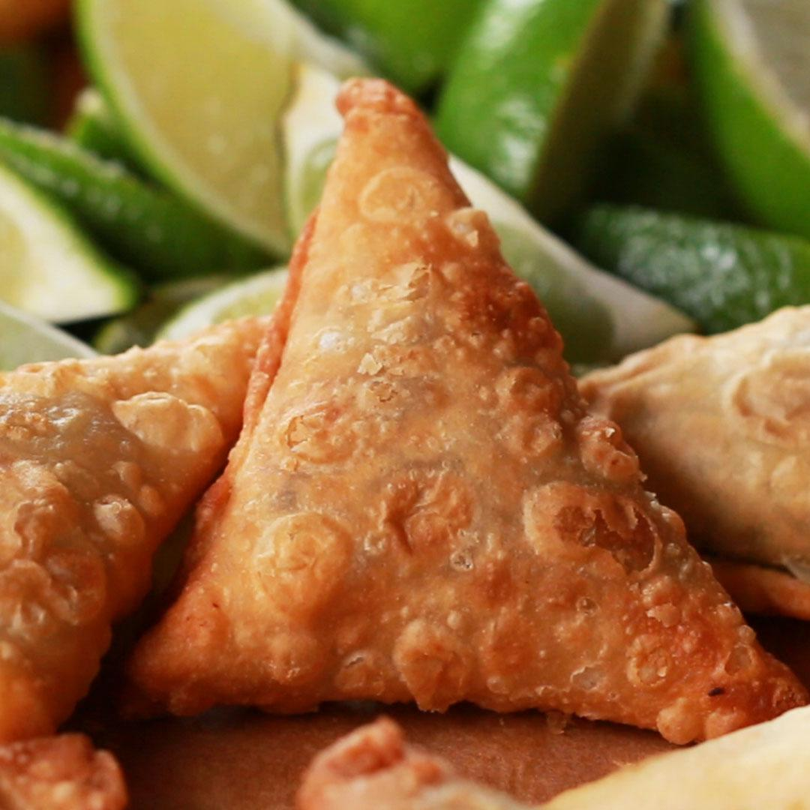

Beef Samosas Recipe

Description
Samosas are delicious appetizers world wide that may be made with several different kinds of filling ,typically beef! Once a filling is prepared, it is wrapped into cute little triangles with spring roll wrappers and may be baked or fried. They may also be frozen to save for later!
Ingredients
- 2 Large Potatoes, Peeled
- 1 Cup Frozen Peas, Thawed
- 2 Tablespoons Vegetable Oil
- 1/2 Teaspoon Cumin Seeds
- 1 Bay Leaf, Crushed
- 1 Pound Ground Beef
- 2 Large Onions, Finely Chopped
- 4 Cloves Garlic, Crushed
- 1 Tablespoon Minced Fresh Ginger Root
- 1.5 Teaspoons Salt
- 1 Teaspoon Ground Cumin
- 1 Teaspoon Ground Coriander
- 1 Teaspoon Ground Turmeric
- 1 Teaspoon Chili Powder
- 1/2 Teaspoon Ground Cinnamon
- 1/2 Teaspoon Ground Cardamom
- 1/2 Teaspoon Ground Black Pepper
- 1 Quart Oil For Deep Frying
- 2 Tablespoons Chopped Fresh Cilantro
- 2 Tablespoons Chopped Green Chili Peppers
- 1 (16 Ounce) Package Phyllo Dough
Steps
- Pour water into a medium saucepan and pour a little salt into it. Boil the water and stir potatoes and peas into it. Boil for around 15 minutes until the potatoes are tender, but still firm. Then drain the water and mash the potatoes.
- While it's boiling, heat 2 tablespoons of oil in a larger saucepan on medium-high heat. Add bay leaf and cumin seeds to this pan and stir them until the mixture is fragnant and the seeds are browned. Add grund beef and onions and cook until the beef is browned and the onions are soft. This should take around 5 minutes.
- Add garlic and ginger to the beef and season with salt, cumin, coriander, turmeric, chili powder, cinnamon, cardamom, and black pepper. Add the mashed potatoes mixture and stir. Turn the heat off and cool the mixture for about an hour or however long it takes to cool. You may place it in a refrigerator to cool faster.
- Heat a quart of oil in a deep saucepan set to medium heat.
- Add cilantro and green chile peppers into the beef / potato mixture and mix it well. Place a tablespoon of the mixture into each of the phyllo sheets and fold the sheets into triangles. Press the edges of the triangles together. Tip: Moistened fingers will help in this step!
- Fry the samosas in batches until they are golden brown. This will take around 3 minutes. Afterwards, transfer them to a paper towel-lined plate in order to drain excess oil and repeat for the remainder of the samosas.
Tip: Chicken livers may be substituted for beef if you prefer. Samosas are best when warm and fresh! Leaving them out may reduce the crunchiness!